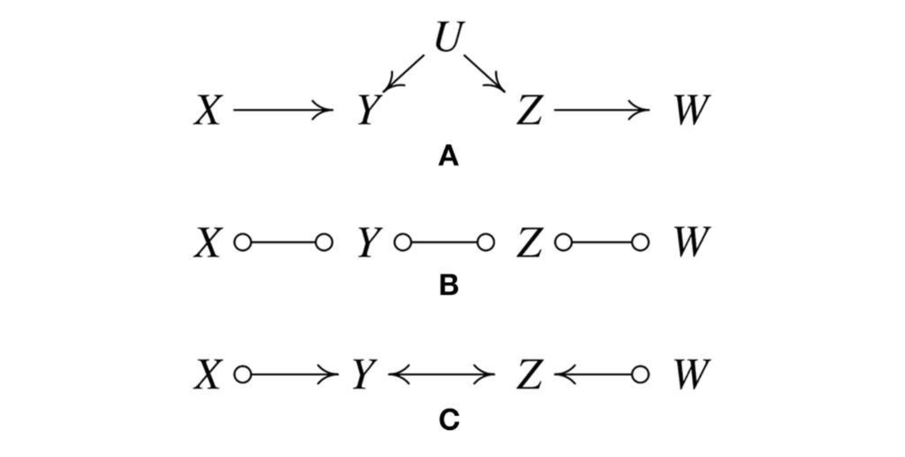
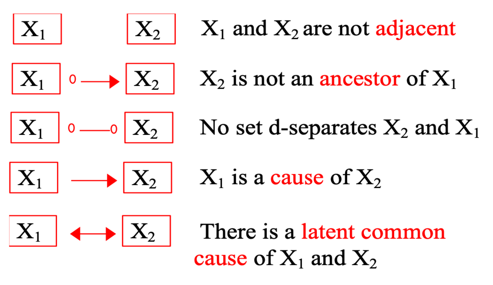

1. Introduction
- 이전 포스트에서 다룬 PC Algorithm은 Causal Discovery의 기념비적인 알고리즘이지만, 현실 데이터에 적용할 때는 몇 가지 강력한 가정과 구조적 한계에 부딪힙니다.
- Faithfulness Violation: 데이터가 완벽하게 Faithful 하지 않다면 잘못된 V-structure를 학습할 수 있습니다.
- Order Dependency: 변수의 입력 순서에 따라 결과 그래프가 달라지는 불안정성이 존재합니다.
- Causal Sufficiency: 관측되지 않은 교란 변수(Latent Confounder)가 존재할 경우, DAG 모델로 이를 표현할 수 없습니다.
- 이번 포스트에서는 이러한 문제들을 해결하기 위해 제안된 PC 알고리즘의 확장판들(Conservative PC, Order-Independent PC)과, Causal Sufficiency 가정을 완화한 FCI 알고리즘에 대해 다룹니다.
2. Conservative PC (CPC)
- Ramsey, Spirtes, Zhang (2006)이 제안한 Conservative PC (CPC) 알고리즘은 Faithfulness 가정의 위배에 강건(Robust)하도록 설계되었습니다.
2.1 Decomposition of Faithfulness
CPC는 Faithfulness 가정을 두 가지로 세분화하여 접근합니다.
- Adjacency Faithfulness:
- 두 변수가 인접해 있다면(Adjacent), 어떠한 조건부 집합(Separator)으로도 독립이 되지 않는다.
- 위배 시: 실제로는 엣지가 있는데 데이터상에서 독립으로 나타나 엣지가 사라지는 문제 발생.
- Orientation Faithfulness:
- 만약 \(X \rightarrow Z \leftarrow Y\) (Unshielded Collider)라면, \(Z\)를 포함하는 \(V \setminus \{X, Y\}\)의 모든 부분집합에 대해 \(X\)와 \(Y\)는 종속적이어야 한다.
- 그렇지 않다면(Non-collider), \(Z\)를 포함하는 어떠한 분리 집합(Separator)도 \(X\)와 \(Y\)를 분리하지 못해야 한다(즉, 분리 집합은 \(Z\)를 포함해서는 안 된다).
2.2 Algorithm Logic
기존 PC 알고리즘은 \(X-Z-Y\) 구조에서 \(X\)와 \(Y\)를 분리하는 단 하나의 Separator \(S\)만 찾으면, \(Z \notin S\) 여부만 확인하고 즉시 Collider 여부를 결정했습니다.
이는 데이터에 노이즈가 있거나 Faithfulness가 약하게 위배될 때 오류를 범할 수 있습니다.
CPC는 이를 보완하기 위해 모든 가능한 부분집합을 확인합니다.
- \(X\)와 \(Y\)의 잠재적 부모(neighbors)들의 모든 부분집합을 검사하여 \(X\)와 \(Y\)를 독립시키는 집합들을 찾습니다.
- Decision Rule:
- Collider (\(X \rightarrow Z \leftarrow Y\)): 발견된 모든 Separator \(S\)가 \(Z\)를 포함하지 않는 경우.
- Non-Collider: 발견된 모든 Separator \(S\)가 \(Z\)를 포함하는 경우.
- Unfaithful (Ambiguous): 어떤 Separator는 \(Z\)를 포함하고, 어떤 것은 포함하지 않는 경우. 이 경우 해당 Triple은 “Unfaithful”로 마킹하고 방향을 결정하지 않습니다.

- 이러한 보수적인 접근을 통해 CPC는 방향성 결정 오류를 줄이고 더 신뢰할 수 있는 골격(Skeleton)과 방향을 제시합니다.
3. Order-Independent PC
3.1 The Problem: Variable Ordering
- 표준 PC 알고리즘은 변수의 순서(Variable Ordering)에 민감합니다.
- 알고리즘이 \(X_1, X_2, \dots, X_n\) 순서로 엣지 삭제를 검토한다고 할 때, 초기에 \(X_1\) 관련 엣지가 삭제되면 \(X_1\)은 더 이상 다른 변수의 Separator 후보가 될 수 없습니다.
- 즉, 엣지를 즉시 삭제(Remove immediately)하는 방식 때문에, 변수를 어떤 순서로 입력하느냐에 따라 최종 그래프의 골격(Skeleton)이 달라질 수 있습니다.
- 이로 인해 잘못된 독립성 검정 결과(False Negative)가 발생하면 오류가 파급될 수 있습니다.

3.2 Solution: PC-Stable & Majority Rule
Colombo와 Maathuis (2014)는 이를 해결하기 위해 Order-Independent PC (PC-Stable)를 제안했습니다.
- PC-Stable (Stable Edge Removal):
- 특정 단계(Separation set 크기 \(k\))가 진행되는 동안에는, 발견된 독립성에 의해 엣지를 삭제하더라도 즉시 그래프에서 지우지 않고 마킹만 해둡니다.
- \(k\) 단계의 모든 변수 쌍에 대한 검사가 끝난 뒤에 일괄적으로 엣지를 삭제합니다.
- 이렇게 하면 해당 단계 내에서는 모든 변수가 동등한 Separator 후보 자격을 유지하므로 순서 의존성이 사라집니다.
- Majority Rule:
- CPC가 너무 보수적(Restrictive)이라 방향을 거의 결정하지 못하는 경우를 대비해, “Unfaithful”로 마킹하는 대신 다수결 원칙(Majority-rule)을 적용하여 더 많이 지지되는 쪽으로 방향을 결정하는 방법도 제안되었습니다.
4. Fast Causal Inference (FCI) Algorithm
- 지금까지의 알고리즘은 Causal Sufficiency (관측되지 않은 교란 변수가 없음)를 가정했습니다.
- 하지만 현실에서는 측정하지 못한 공통 원인 \(U\)가 존재하는 경우가 빈번합니다.
- 이 경우 PC 알고리즘은 잘못된 엣지를 그리거나 허위적 상관관계를 인과관계로 오인할 수 있습니다.
4.1 Latent Confounders Example
- 다음과 같은 실제 인과 구조(True Graph)가 있다고 가정해 봅시다. \[X \rightarrow Y \leftarrow U \rightarrow Z \leftarrow W\]
- 여기서 \(U\)는 관측되지 않는 Latent Variable입니다.

- Observation: \(Y\)와 \(Z\)는 \(U\) 때문에 종속적입니다. 하지만 \(U\)를 관측할 수 없으므로, \(Y\)와 \(Z\)를 분리할 수 있는 관측 변수 집합은 존재하지 않습니다.
- Result: PC 알고리즘은 \(Y-Z\) 사이에 엣지가 있다고 판단할 것입니다(False Positive).
4.2 FCI Output: PAGs
- FCI 알고리즘은 이러한 상황을 처리하여 PAG (Partial Ancestral Graph)를 출력합니다.
- PAG는 단순한 DAG보다 더 풍부한 엣지 정보를 담고 있습니다.
Edge Meanings in PAGs (Partial Ancestral Graphs)
- FCI 알고리즘의 결과물인 PAG는 관측되지 않은 잠재 변수(Latent Confounder)의 존재 가능성까지 포함하여 인과관계를 표현합니다.
- 엣지의 양 끝 모양(Mark)이 의미하는 바는 다음과 같습니다.

- No Edge (Independence):
- 두 변수 \(X_1\)과 \(X_2\) 사이에 엣지가 없다는 것은, 두 변수를 독립으로 만드는 조건부 집합(Separating Set)이 존재함을 의미합니다.
- 즉, 두 변수는 인과적으로 직접적인 관련이 없습니다.
- Directed Edge (\(X_1 \rightarrow X_2\)):
- 의미: Ancestral Relationship.
- \(X_1\)은 \(X_2\)의 원인(Ancestor)이며, 반대로 \(X_2\)는 \(X_1\)의 원인이 아닙니다.
- 잠재 변수가 존재하더라도 \(X_1\)이 \(X_2\)에 영향을 준다는 사실은 명확합니다.
- Bi-directed Edge (\(X_1 \leftrightarrow X_2\)):
- 의미: Latent Confounding.
- \(X_1\)이 \(X_2\)의 원인이 아니고, \(X_2\)도 \(X_1\)의 원인이 아닙니다.
- 대신, 두 변수에 동시에 영향을 미치는 관측되지 않은 공통 원인(Latent Common Cause, \(L\))이 존재합니다 (\(X_1 \leftarrow L \rightarrow X_2\)).
- Circle Edge (\(X_1 \circ \!\! - \!\! \circ X_2\) or \(X_1 \circ \!\! \rightarrow X_2\)):
- 의미: Uncertainty (Indeterminacy).
- 엣지의 끝이 원(\(\circ\))으로 표시된 것은 데이터만으로는 해당 방향이 꼬리(Tail, 원인)인지 화살표(Arrowhead, 결과)인지 확신할 수 없음을 나타냅니다.
- 추가적인 배경지식이나 데이터 없이는 이 관계를 2번(\(\rightarrow\))이나 3번(\(\leftrightarrow\)) 중 하나로 확정할 수 없는 상태입니다.
FCI Application
- 앞선 예시에 FCI 알고리즘을 적용하면, \(Y\)와 \(Z\) 사이의 관계가 \(Y \leftrightarrow Z\)로 추론될 수 있습니다.
- 이는 \(Y\)와 \(Z\) 사이에 직접적인 인과관계가 있는 것이 아니라, 우리가 측정하지 못한 숨겨진 요인(Hidden Confounder)이 두 변수를 동시에 조절하고 있음을 시사합니다.
5. Summary & Conclusion
이번 포스트에서는 Constraint-Based Structure Learning의 심화 주제들을 다루었습니다.
Conservative PC (CPC): Faithfulness 가정이 깨지는 상황을 대비해, 충돌하는 증거가 있을 때 방향 결정을 보류(Unfaithful marking)하여 강건성을 높입니다.
Order-Independent PC: 변수 입력 순서에 따라 결과가 바뀌는 문제를 해결하기 위해, 엣지 삭제를 단계별로 지연(Stable)시키거나 다수결 원칙을 도입합니다.
FCI Algorithm: Causal Sufficiency 가정이 없을 때(즉, Latent Confounder가 있을 때), 이를 양방향 엣지(\(\leftrightarrow\)) 등으로 표현하는 PAG를 학습합니다.
Constraint-Based 방법론은 조건부 독립성 검정(Conditional Independence Test)이 정확하다면 이론적으로 완전(Complete)합니다.
실제 구현에서는 데이터의 특성(선형/비선형, 연속/이산)에 맞는 적절한 CI Test(Partial Correlation, Fisher’s Exact Test, Kernel-based Test 등)를 선택하는 것이 중요합니다.